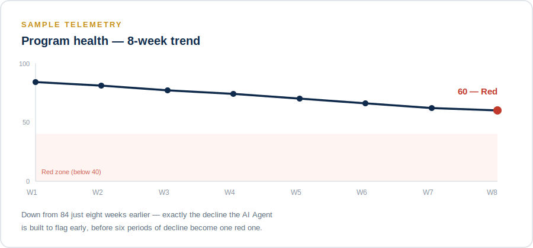
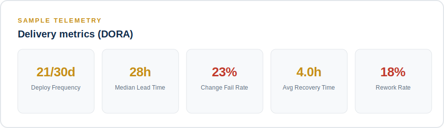
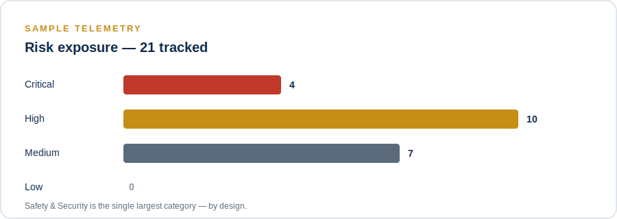

NextEmTech
Next Emerging Technology
Enterprise AI Agentic architecture, including AI Agents implementation.
The Project Operations Digital Twin is an application that models a real multi-phase, intelligent transformation program and converts its raw engineering activity into governed, AI-assisted decision support. It fuses two data disciplines that are usually reported separately — traditional project management (schedule, cost, risk, milestones) and DORA software delivery metrics (deploy frequency, lead time, change fail rate, recovery time, rework rate) — into a single Command Center, then uses an AI Agent to correlate signals across both and surface what a program manager should investigate next.
The application is deliberately built around one non-negotiable principle: the AI Agent analyzes, but never decides. Every AI call is a single, stateless request — no tools, no autonomous loop, no memory of previous runs — and every response is stored as a labeled, timestamped, advisory artifact that a human reviews before any action is taken. This is not a limitation of the build; it is the architecture's central design commitment.
AI provides the analysis. The person owns the decision.



Proprietary to NextEmTech, © 2026. All rights reserved.